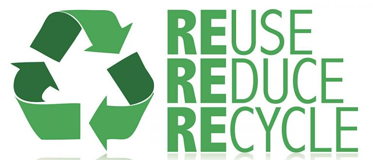

Air pollution refers to the release of pollutants into the air—pollutants that are detrimental to human health and the planet as a whole. According to the World Health Organization (WHO), each year, indoor and outdoor air pollution is responsible for nearly seven million deaths around the globe. Ninety-nine percent of human beings currently breathe air that exceeds the WHO’s guideline limits for pollutants, with those living in low- and middle-income countries suffering the most. In the United States, the Clean Air Act, established in 1970, authorizes the U.S. Environmental Protection Agency (EPA) to safeguard public health by regulating the emissions of these harmful air pollutants.
When the National Ambient Air Quality Standards were established in 1970, air pollution was regarded primarily as a threat to respiratory health. In 1993, NIEHS researchers published the landmark Six Cities Study, which established an association between fine particulate matter and mortality.
Air pollution exposure is associated with oxidative stress and inflammation in human cells, which may lay a foundation for chronic diseases and cancer. In 2013, the International Agency for Research on Cancer of the World Health Organization (WHO) classified air pollution as a human carcinogen.
Mortality rates related to air pollution are a concern. Exposure to the air pollutant PM2.5 is associated with an increased risk of death.
A team of researchers, partially funded by NIEHS, found that deaths decreased after air pollution regulations were implemented and coal-powered plants were retired. The study data covered 21 years. More specifically, they found exposure to PM2.5 from coal was associated with a mortality risk that was twice as high as the risk from exposure to PM2.5 from all sources. PM2.5 from coal is high in sulfur dioxide, black carbon, and metals.
Public health concerns include cancer, cardiovascular disease, respiratory diseases, diabetes mellitus, obesity, and reproductive, neurological, and immune system disorders.Research on air pollution and health effects continually advances.
According to a National Toxicology Program (NTP) report, TRAP exposure also increases a pregnant woman’s risk for dangerous changes in blood pressure, known as hypertensive disorders, which are a leading cause of pre-term birth, low birth weight, and maternal and fetal illness and death.
The rising number of air pollutants has made breathing fresh, clean air next to impossible. The causes of air pollution have left everyone worried about their health. Air pollution being the largest environmental killer, kills over 17 billion people worldwide. While calculating, that’s up to 2.2 years lost on an average.
As pollutants in the air cannot be seen with our naked eyes, we don’t realize the sources of the increasing pollution levels. In order to understand the sources of air pollution, we need to first go through the basic causes of air pollution.
We have listed some common air pollution causes along with their effects. They have serious implications for you and your loved ones health on a daily basis.
Most of the air pollution takes place due to the incomplete burning of fossil fuels. These include coal, oil, and gasoline to produce energy for electricity or transportation. The release of CO at a high level indicates how much fossil fuel is burned. This also emits other toxic pollutants like nitrogen oxides into the air. Inhaling air induced with pollutants due to the burning of natural gas and fossil fuel reduces the heart’s ability to pump enough oxygen. Hence causing one to suffer from various respiratory and heart illnesses. Furthermore, the nitrogen oxides are responsible for acid rain and the formation of smog.
Industrial activities emit several pollutants in the air that affect the air quality more than we can even imagine. Particulate matter 2.5 and 10, NO2, SO2, and CO are key pollutants that are emitted from industries that use coal and wood as their primary energy source for the production of their goods. Industrial pollution effects associated with your health can range from
Huge amounts of organic chemicals like CO2, hydrocarbons, etc. are released by the industries including other toxicants. They furthermore affect the climate as CO2 causes a greenhouse effect. Hence, causing the heat to be trapped within the earth’s atmosphere. Therefore, the temperature and humidity increase. More and more industries are being built as the demand grows. And as a result the emissions also increase day by day. We are already observing the after-effects of this, as the earth’s temperature rises by 1 degree Celsius per decade.
Use of toxic products also called Volatile Organic Compounds (VOCs), inadequate ventilation, uneven temperature, and humidity level can cause indoor air pollution, whether you are in an office, school, or at your comfortable home. House air pollution can take place due to ignorant factors, for instance, smoking tobacco inside a room or leaving mold-infected walls untreated. The use of wood stoves or space heaters is capable of increasing the humidity level which can directly affect the health of a person in no time. Carcinogens and toxins from indoor air pollution cause 17% of deaths from lung cancer.
Climate change is not just increasing wildfire but also spiking air pollution. Burning stubble and farm residue is also a major contribution to wildfire. It causes increased PM2.5 in the air which collides with other harmful substances like chemical gas and pollen creating smog. Smog makes the air hazy and people find it difficult to breathe. Visibility also decreases as a result of this smog. Difficulty in breathing, irritation in the eyes, nose, and throat, itchiness in the respiratory tract, etc. are all symptoms of inhaling smog.
Cars on the roads are increasing day by day. There is no denying that vehicle pollution is the major contributor to air pollution, especially in urban cities, where car ownership rates are more as compared to rural areas. When the car burns gasoline, it emits pollutants in the air which is as harmful as smoking 10 cigarettes a day. Your vehicle emits:
When vehicle pollution is high in the atmosphere, it creates a hole in the ozone layer contributing to smog and causing various health issues.
Large numbers of cars and other vehicles on the roads contribute to traffic congestion on the roads, affecting the air quality of that particular area to a great extent. This necessitates the need to monitor the air quality at local level, for each area, so that identifying the sources and taking the proper measures can be done.
Taking proper and effective measures as individuals to control vehicular emissions such as carpooling, using public transportation (metros, buses, rails) will help in reducing the vehicular emissions.
At the rate with which air pollution is increasing in the country, immediate action has become an absolute necessity. Not only does it affect human lives but also causes havoc in nature.
Nelson Mandela once expressed his concern about air pollution and particularly its effect on human lives, saying, “Everyone has the right to an environment that is not harmful to their health or well-being; and to have that environment protected, for the benefit of present and future generations.”
Using public transport is a sure short way of contributing to less air pollution as it provides with less gas and energy, even carpools contribute to it. In addition to less release of fuels and gas, using a public transport can also help in saving money. Lesser vehicles on roads will contribute to lesser emissions. Using public transport will help in:
The energy that the lights take also contribute to air pollution, thus less consumption of electricity can save energy. Use energy saving fluorescent lights to help the environment.
The concept of recycle and reuse is not just conserve resources and use them judicially but also is helpful for air pollution as it helps in reducing pollution emissions. The recycled products also take less power to make other products.
The use of plastic products could be very harmful to the environment as they take a very long time to decompose, due to their material made up of oil. The use of paper bags instead is a better alternative as they decompose easily and are recyclable.
The collecting of garbage and getting it on fire in dry seasons or dry leaves catching fires is a huge factor for causing air pollution, moreover smoking also causes air pollution and causes the air quality to worsen along with obviously damaging one’s health.
The usage of AC’s takes a lot of energy and emits a lot of heat which is bad for the environment. AC’s also take a lot of power and energy to work as compared to fans.
The gas that is emitted from fireplaces in homes and factories are extremely dangerous for air pollution and harms the air quality severely. The use of filters should be used at least if the consumption couldn’t be lessened, this will help to reduce the effect of harmful gases absorbing in the air.
The use of crackers during festivals and weddings is sadly one of the biggest contributors to air pollution, leading to a layer of smog which is extremely harmful for health. So, practice of no crackers should be implemented.
Products that use the chemicals in their usage or smell strongly, like paints or perfumes should be used less or outside the house. There can also be an alternative to use products with low chemical content and organic properties.
Last but not the least, plant and grow as many trees as possible. The practice of planting trees provides a lot of benefits to the environment and helps with the release of oxygen.